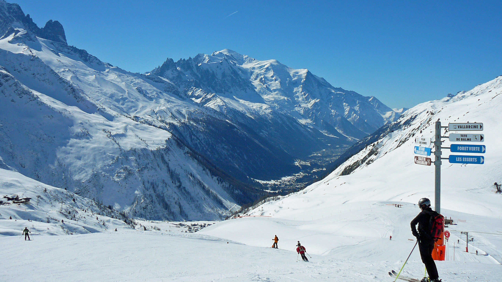
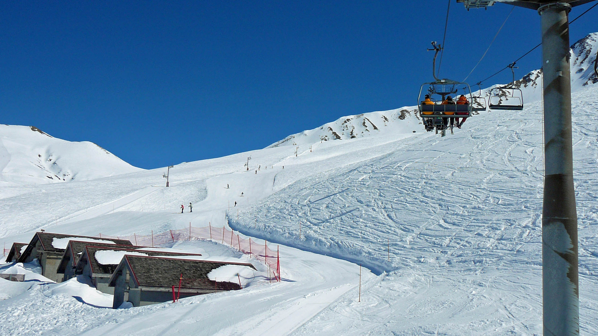
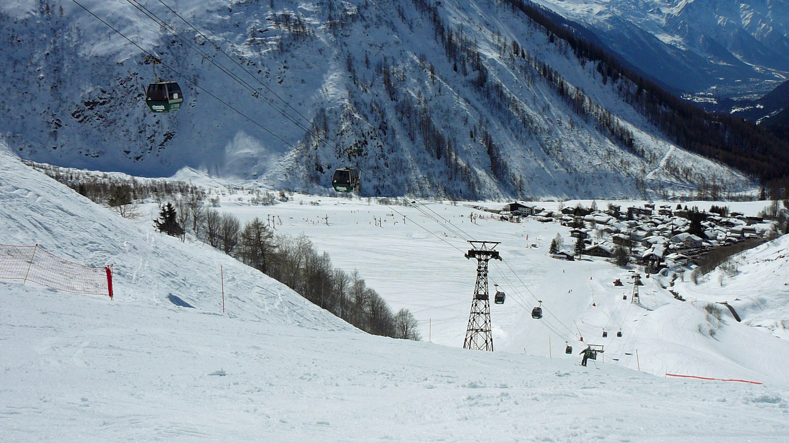
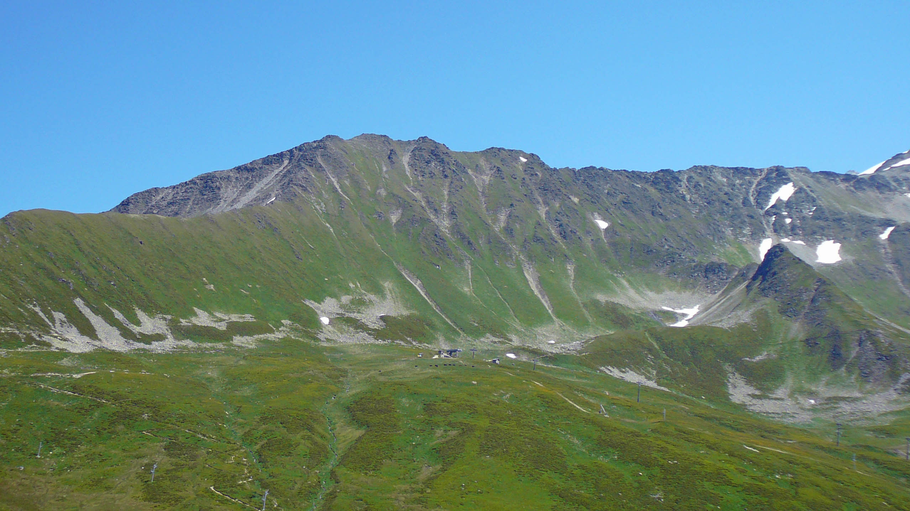

Domaine de Balme
Ski entre France et Suisse
Ce domaine skiable est situé tout au bout de la vallée de Chamonix, au dessus du village du Tour. Il est aussi accessible depuis le village de Vallorcine, à la frontière Suisse.
Ce domaine est idéal pour le ski en famille, le long des pentes douces du Col de Balme. Côté Vallorcine, les pistes au départ de la Tête de Balme proposent un ski plus sportif
Ce domaine est idéal pour le ski en famille, le long des pentes douces du Col de Balme. Côté Vallorcine, les pistes au départ de la Tête de Balme proposent un ski plus sportif

le domaine de Balme en hiver

Télésiège des Autannes en hiver

Piste rouge Caisets et village du Tour
Randonnées ou VTT dans les alpages en été
En été, le domaine des Balme vous propose des randonnées à pied ou en VTT à travers les alpages.
Une nouvelle télécabine, actuellement en construction, viendra bientôt améliorer le confort des skieurs, randonneurs et vététistes.
Une nouvelle télécabine, actuellement en construction, viendra bientôt améliorer le confort des skieurs, randonneurs et vététistes.

Domaine de Balme en été.